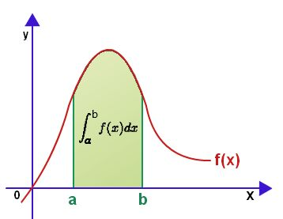

Definición
El problema que se quiere resolver es el de la integral definida de una función,
donde la función debe cumplir con ciertos requerimientos de continuidad, diferenciabilidad, etc. [1].
La definición usual de integral definida es que ésta representa el área bajo la curva de la función, como se muestra en la figura [2]:
